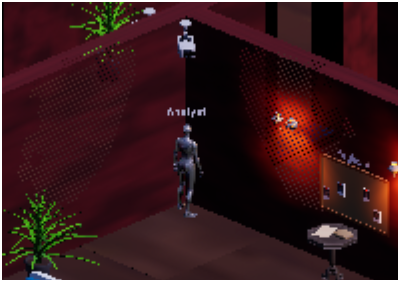
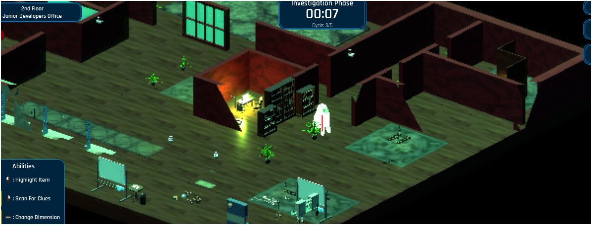
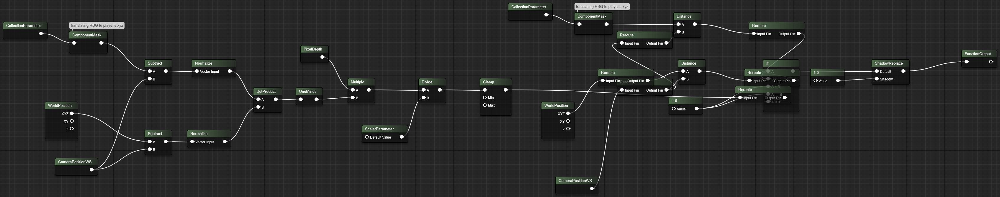

Occlusion mask fading wall geometry as the player moves behind it — Parallax Protocol, Melanated Game Kitchen Game Jam, July 2025
The Problem
Walls that hide the player
Fixed isometric cameras have a structural visibility problem: walls look fine until the player walks behind one. Standard fixes — hiding actors, toggling mesh visibility — are brittle and require per-object setup. I needed a shader-based solution that was automatic and applied at the material level.
Before the fix
What the problem looked like


Early passes — walls fully visible, player obscured when walking behind geometry.
What I Built
Dot product as a visibility signal
The material calculates a dot product between each surface's world normal and the camera forward vector. When a surface faces the camera past a manually tuned threshold, its opacity fades smoothly — no geometry changes, no per-actor Blueprint logic.
- Dot product threshold — surface normals against camera forward; occluding faces fade via a smoothstep on opacity output
- Distance-based falloff — a secondary distance calculation between world position and camera position refines the fade region, preventing the mask from triggering on surfaces too far from the player
- If node branching — the dot product and distance values feed an If node that drives a ShadowReplace function, allowing the system to output cleanly into the material function output
- Fixed isometric constraint — constant view angle means the threshold only needed tuning once, no runtime recompute
- Selective mesh application — material applied to wall and ceiling meshes only, keeping shader cost contained

drag to pan · scroll to zoomMaterial function graph — CollectionParameter → ComponentMask → Subtract → Normalize → DotProduct → Clamp feeds into an If node alongside a Distance check, outputting through ShadowReplace.
The Hard Problem
Multiplayer broke the mask
In single-player the fade worked correctly. In multiplayer, the mask clipped through geometry behind the player because the material had no runtime knowledge of where the player was. The dot product tells a surface whether the camera is looking at it — not whether a player is standing behind it. In a networked session, that position data wasn't reaching the shader.
The Fix — MPC + Is Locally Controlled
Working with a teammate, I wired the player's world position into a Material Parameter Collection (MPC_PlayerLocation) via Blueprint. On BeginPlay, the pawn checks Is Locally Controlled — the multiplayer gate — and if true, starts a looping 0.1s timer that fires a custom event. That event reads the actor's world location and calls Set Vector Parameter Value on the MPC. Every wall material reads from the same collection, so all occluding surfaces update in sync with no per-instance wiring.
Reflection
The shader was only half the system
A material is a receiver of runtime data, not a closed system. Getting the dot product logic right was one problem. Building the Blueprint pipeline to feed accurate, per-client position data into it across a live networked session was a completely different one — and the more instructive of the two.
Research Question
Can dot product–based occlusion masking generalise to a dynamic-camera solution — and at what point does a shader-only approach reach its limits compared to depth-buffer or geometry-based alternatives in real-time multiplayer?